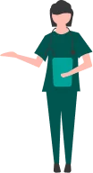
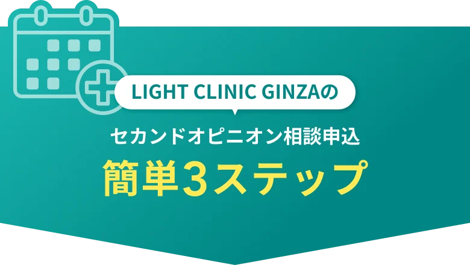
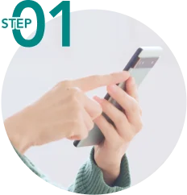
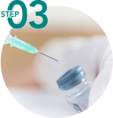

電話で相談する
Webで相談する
電話で相談する
Webで相談する
がん治療の
経験豊富な医師と
あなたに合う
治療を作る!


※ カウンセリングをし、実際に治療を開始した件数を指します。
2011年10月〜2026年5月時点。
これからの治療を一緒に考えましょう
相談

当院は、何でも話せる身近ながんに特化した
総合的・統合的クリニックを目指しています。
 150,000
150,000
当院の萬副院長が人気YouTubeチャンネル
「ヘルスアカデミー公式YTチャンネル」にてインタ
ビューを受けました！
日本のがん治療課題に本音で切り込み、一人ひとりに
合ったがん治療を模索し続ける萬副院長の信念は、
多くの反響を呼んでいます。
今の治療に


1つでも当てはまったら、

当院は
一人ひとりの状態に合った治療を提案し 身体への負担を軽減しながら 納得のいく治療を目指す クリニックです。

当院では丁寧なカウンセリング、精密検査に
基づき、鳥取で数多くの患者様を診てきたがん治療のプロが、患者様それぞれの病状や体質に合わせた治療方針を定めます。
抗がん剤治療に免疫療法を組み合わせることで身体への負担を抑えつつ、かつ効率的に、無理のない治療をご提案します。


当院のセカンドオピニオンは、主治医と異なる視点から現在の治療を見直します。
一人ひとりの治療経過や症状を尊重し、主治医と密に連携することで、治療の空白を作らず、ス
ムーズな併用をサポートします。
現在の病院との良好な関係を保ちながら、別の選択肢を安心して検討いただける環境を目指しています。


全国どこにお住まいでもオンラインで相談が可能です。「患者の長距離移動は体力が心配」
そんなご家族の不安を、解消します。
通院が困難な状況にあっても、移動の負担が少なく、ご自宅にいながらがん治療のプロによる「次の一手」の提案を受けられます。
まずは不安を一緒に整理しませんか？
相談
当院が誇る

当院では、がんそのものの治療だけではなく、
患者様の身体、心、精神、そして生活の質まで
含めた包括的なサポートを行う

また、がん治療には抗がん剤治療を始めとする標準治療と、それだけでは補えきれない部分を支える選択肢として自由診療があります。
ここでは、当院が提供する自由診療で
代表的な免疫療法についてご紹介します。


従来の樹状細胞ワクチンとは異なり、3つの独自技術で免疫力を高める治療により、進行がんや再発がんに対してアプローチを行うがん免疫療法です。体の免疫を担う樹状細胞を活性化して培養する方法、がんの目印となる抗原を用いた働きかけ、さらに外用薬による局所の免疫活性化を組み合わせています。
これにより、がんを見つけて攻撃する力を高め、効率よくアプローチできる状態へ導きます。
さらに、体全体の免疫機能を底上げすることで、治療効果の向上だけでなく、再発しにくい状態を目指します。加えて、身体への負担を抑えながら継続しやすい点も特徴です。


独自の勅状細胞培養技術により免疫細胞を
活性化しがんとの戦いをサポートします。

多様ながんに対応可能で、患者様1人1人に
適した抗原を使用しサポートします。

自然免疫と獲得免疫を効果的に連携させ、
早期から免疫系全体の活性化を目指します。
内容：患者様ご自身の血液から採取した「樹状細胞（免疫の司令塔）」に、がんの特徴（抗原）を認識させ、再び体内に戻す免疫療法です。
目的：体内の免疫システム（T細胞など）に対し、がん細胞をピンポイントで攻撃するように教育・指令を出すことで、再発防止や生活の質の向上を目指します。
相談料金：0円
診察料金：16,500円（税込）30分経過後 15分毎7,700円（税込）
事前検査費用/1回のみ：21,080円（税込）
樹状細胞培養/1回のみ：3,322,000円（税込）
個別抗原費用/樹状細胞培養時に1回のみ：264,000円（3抗原）〜528,000円（6抗原）（税込）
※がん種、病状によって、必要ながん抗原は選択されます。
成分採血前処置費用/1回：33,000円（税込）
投与対応費/6回：13,200円/1回（税込）
検査費用/2回：22,000円〜33,000円/1回（税込）
※必要に応じて実施いたします
樹状細胞ワクチン療法は、個人の免疫状態によって効果に差が出ることがあります。
一時的な発熱や注射部位の腫れ、倦怠感などが報告されることがあります。
重篤な副作用の可能性は低いとされていますが、アレルギー反応などのリスクがゼロではありません。
治療の適応やリスクについては、診療時に詳しくご説明し、ご納得いただいた上で進めていきます。

よろずクリニック式樹状細胞療法
| 治療内容 | 費用（税込） |
|---|---|
| 事前検査費用（感染症）※通常1回 | 21,080円 |
| 樹状細胞培養※通常1回 | 3,322,000円 |
|
個別抗原費用※樹状細胞培養時に1回 ※がん種、病状によって、必要な がん抗原は選択されます。 |
264,000円（3抗原） 〜528,000円（6抗原） |
| 成分採血前処置費用※通常1回 | 33,000円 |
| 投与対応費/1回※通常6回 | 13,200円 |
|
検査費用/1回※通常2回 ※必要に応じて実施いたします |
22,000円 〜33,000円 |
| 総額目安 |
3,763,280円 〜4,049,280円 |
がん治療の経験豊富な医師が、
個々の状況に合ったがん治療を
分析・ご提案
『保険診療』と『自由診療』を
踏まえたセカンドオピニオン
オンラインOK！
全国どこからでも相談可能
だからこそ！
ステージ4のがんでも安心して
納得のいく次の一手
を選択できます
これからの治療を一緒に考えましょう
相談

専用フォームまたはお電話からご予約いただけます。
スタッフがご相談内容等を確認し、診察日時の調整を行います。
予約した日時に、オンラインまたは
訪問で医師の診察を受けます。

診察での情報を元に、
お客様に適した治療を提案の上、
治療を開始します。
よろず式樹状細胞療法はどのようなステージや
特性を持つがんに有効ですか？
ステージ4と診断された、もしくは、再発・難治性
のがんにも効果が期待されます。
よろず式樹状細胞療法は保険適用となりますか？
保険適用外です。
当院での治療（遺伝子パネル検査を含む）は公的保険が適用されない自由診療のため、治療費はすべて自己負担となります。
すでに抗がん剤や放射線治療を受けています
が治療を受けられますか？
多くの場合は、受けることができます。
カウンセリング時に担当の医師とご相談ください。
がんの相談でもオンライン診療はできますか？
可能です。
ただし、遺伝子検査、採血による検査を実施の際には、ご来院いただく必要がございます。
支払い方法を教えてください。
現金のほか、クレジットカード（VISA・Master・JCB・AMEX・ダイナース・銀聯カードなど）、QRコード決済、電子マネー、銀行振込（※手数料は患者様負担）によるお支払いが可能です。
詳細は、直接当院へお問い合わせください。
駐車場はありますか？
駐車場のご用意はありません。
車でご来院の際は、最寄りの昭和通りアンダーパスの新京橋駐車場（B出口）か、お近くのコインパーキングをご利用ください。
なお、駐車場代は患者様負担となります。